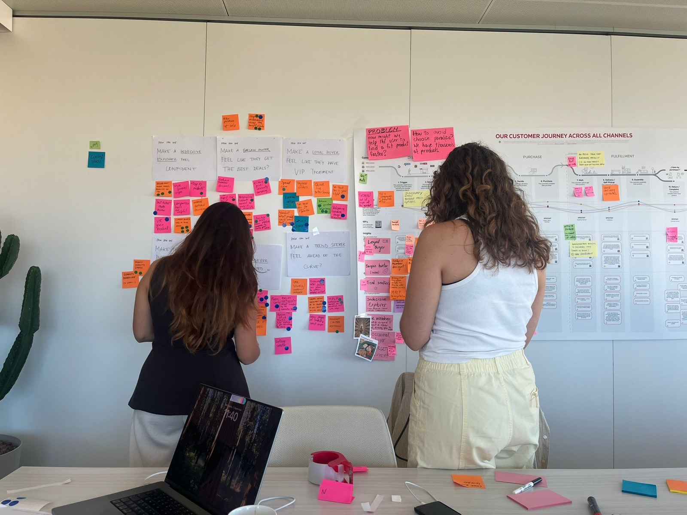
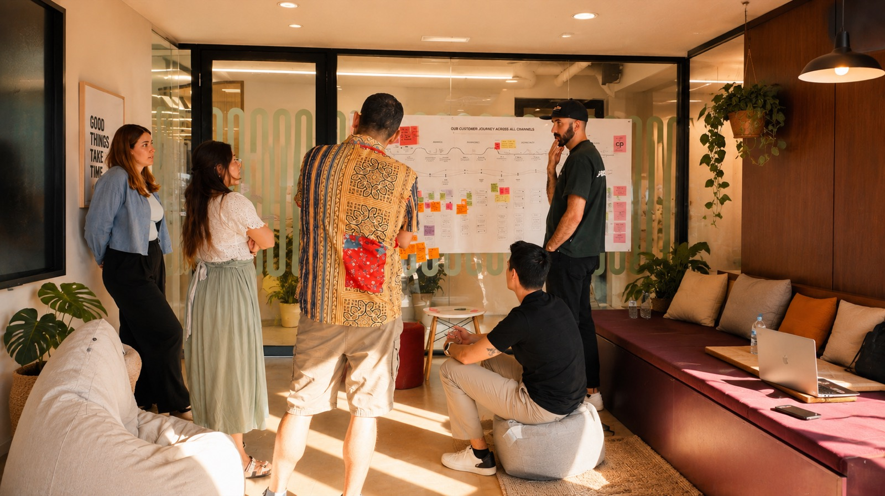
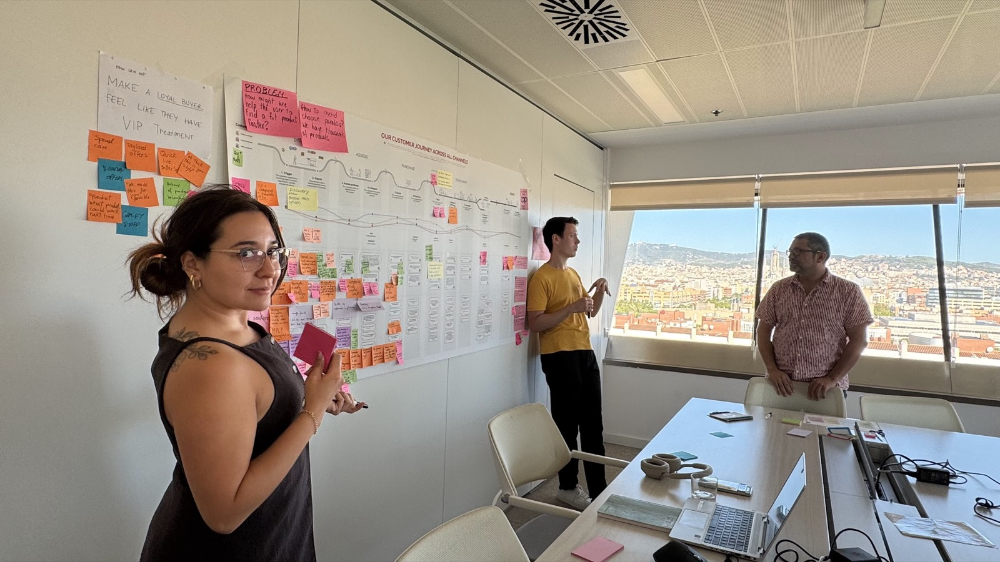
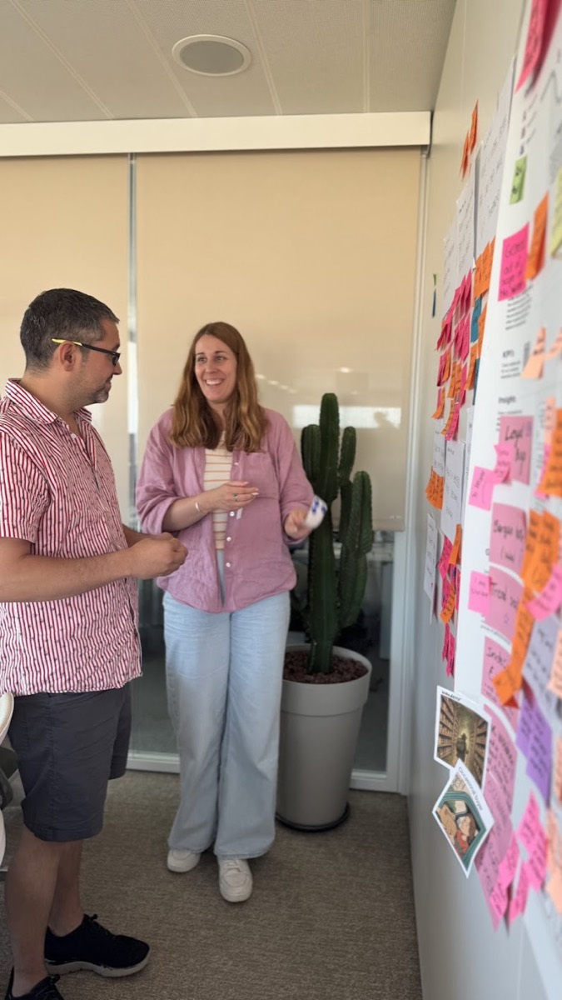
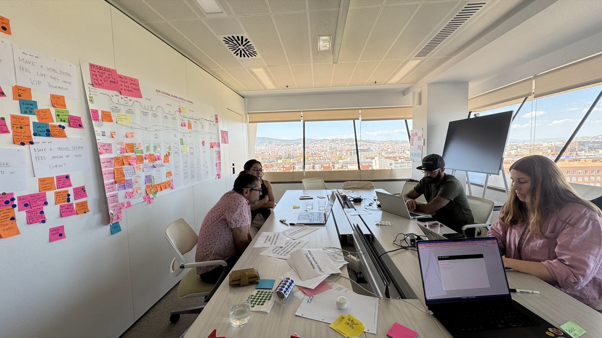
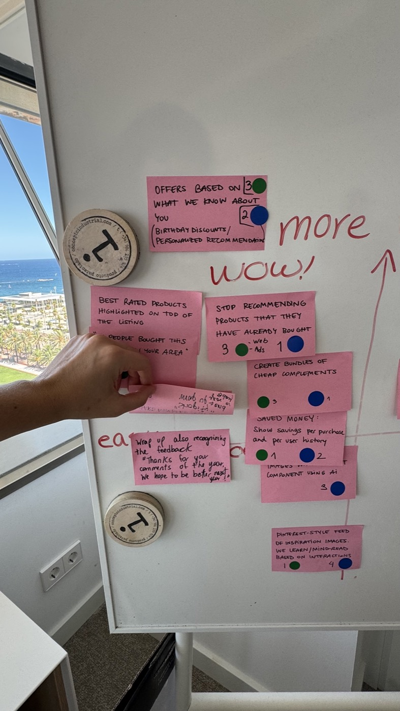

La personalización empieza entendiendo a las personas. Después, los sistemas. Y recién después entra la IA.
En XXXLutz, yo lideraba el UX en ASSESS (incluyendo la Product Detail Page), mientras que Paula lideraba Product Discovery. Un día, nos miramos y nos preguntamos: ¿cómo puede ser que, en pleno siglo de la IA, nuestras recomendaciones sean tan... aleatorias?
Había sliders titulados “esto te va a interesar”. Pero si mirabas una jarra de verano, te ofrecíamos un mueble de jardín sin tener jardín. Mucho no te interesaba.
Y ahí concluimos que hay solo una forma de hacer recomendaciones que tengan sentido para los usuarios. Necesitamos aprender profunda y sistemáticamente sobre ellos y sus individualidades.
Smart Recommendations Workshop
¿Qué necesitamos para que nuestras recomendaciones sean más inteligentes?
Decidimos organizar y facilitar un workshop de cuatro días en nuestras oficinas de Barcelona para responder a esta pregunta. Reunimos a un arquitecto, dos Data Analysts, un especialista en AI y nosotras, dos Product Designers con sed de una mejor experiencia. Nuestro objetivo no era diseñar un slider que funcione mejor. Era diseñar un sistema capaz de predecir tus intereses.

Uno de nuestros lemas en XXXLutz es trasladar lo mejor de la experiencia de un buen vendedor a nuestra tienda virtual. Eso implica recordar qué compraste en el pasado, aprender qué colores y estilos te gustan, cómo es tu casa.
Por un lado necesitabamos toda la información que existía sobre nuestros productos: atributos, categorías, disponibilidad, estilos, relaciones entre artículos y los distintos sistemas donde vivía esa información. Por otro, todo lo que podíamos aprender de nuestros usuarios. Qué productos miraban, cuáles compraban, qué guardaban en favoritos, qué filtros utilizaban, qué buscaban y, sobre todo, qué patrones podíamos inferir a partir de ese comportamiento.
Comenzamos armando un mapa gigante de sistemas que contenían toda la información. Ya la estábamos almacenando, pero nunca nadie la había conectado entre sí.

Un uso de la IA que sí tiene sentido
Hay algo para lo que la IA es extremadamente efectiva: recopilar tanta información y encontrar patrones para cada uno de nuestros usuarios.
Si la IA ve que varios muebles que has comprado calificarían como diseño escandinavo, puede inferir que es un estilo que te gusta. Y así con más datos de tu comportamiento. Que probablemente no tengas jardín, que acabas de comprar una cama y ahora necesitas mesas de luz antes que otra cama.
Varios proyectos tiraban hacia el mismo lado
Al hablar de esto empezaron a surgir menciones de otros proyectos en producción. La sorpresa: ya había proyectos en marcha que nos daban piezas. Bundles, Coveo, un botón visual... Proyectos que recopilaban, reinterpretaban o asociaban información de producto y de usuario, pero en pequeñas porciones. Solo faltaba conectar esas iniciativas en una misma estrategia.

Paso a la acción
El resto del workshop consistió en convertir esa estrategia en algo accionable. Definimos personas, escribimos decenas de How Might We, generamos hipótesis, priorizamos ideas en una matriz Now, How, Wow y asignamos cada iniciativa al equipo que podía convertirla en un experimento medible.

Algunas eran nuevas funcionalidades; otras consistían en integraciones de backend para conectar sistemas que hasta ese momento trabajaban de forma aislada.

El proyecto paraguas se llamó Customer 360. Bajo esa iniciativa agrupamos tanto proyectos que ya estaban en marcha como otros que surgieron durante el workshop, creando una estrategia común para aprender de nuestros usuarios y habilitar futuras experiencias personalizadas.
Empezamos intentando mejorar una recomendación. Terminamos construyendo la base para construir cualquier experiencia personalizada que la empresa quisiera crear en el futuro.
Me gusta pensar que Customer 360 terminó reflejando también mi forma de trabajar. Yo aprendo constantemente de las personas para diseñar experiencias que se sientan simples. Customer 360 hacía exactamente lo mismo, pero a escala.